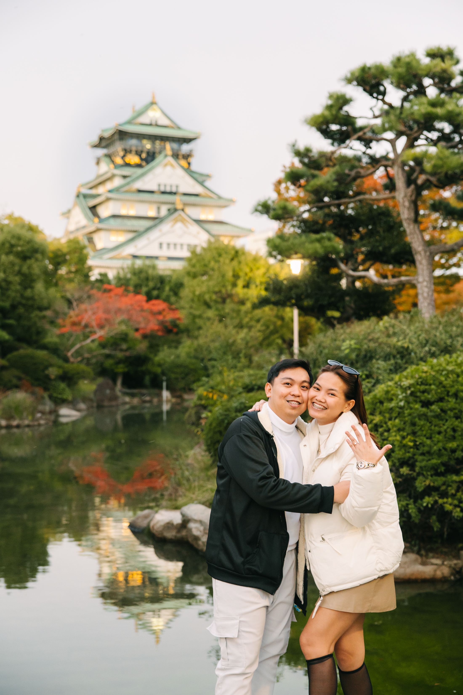
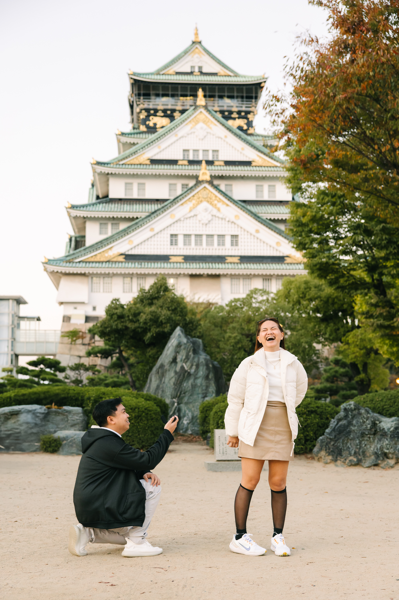

Where It Began
A Quiet Start
Our paths crossed in the most ordinary way, but the connection felt special right away. From small conversations to long chats, friendship became the foundation of our story.


From a simple beginning to a beautiful yes, each season of our story led us here. We are grateful to celebrate this next chapter with the people we love most.
Where It Began
Our paths crossed in the most ordinary way, but the connection felt special right away. From small conversations to long chats, friendship became the foundation of our story.

When We Knew
In joyful milestones and quiet in-between moments, we kept choosing each other. What started simply grew into a love rooted in trust, faith, and shared dreams.

The Next Chapter
With grateful hearts, we prepare for marriage and the life ahead. We cannot wait to begin this covenant and celebrate with the people who have loved us all along the way.

A Quiet Start 1 of 4